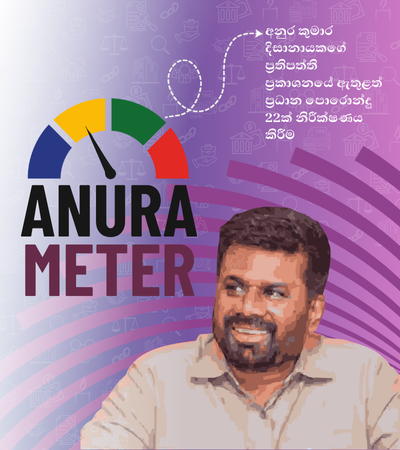
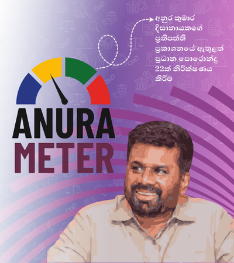

අනුර මීටරය යනු ජනාධිපති අනුර කුමාර දිසානායකගේ 2024 ජනාධිපතිවරණ ප්රතිපත්ති ප්රකාශනය තුළින් තෝරාගත් පොරොන්දු කිහිපයක ප්රගතිය නිරීක්ෂණය කරන මාර්ගගත වේදිකාවකි. නිරීක්ෂණය සඳහා දැනට තෝරාගෙන ඇති මෙම පොරොන්දු 30 මගින් ප්රධාන වශයෙන් අවධානය යොමු කරන්නේ මහජනතාවගේ ඉහළ උනන්දුවක් පවතින යෝජනා කෙරෙහිය. විශේෂයෙන්ම ආර්ථික ප්රතිසංස්කරණ, ආණ්ඩුකරණය, දූෂණ විරෝධය , නීතිය හා සාමය සහ සමාජ ආරක්ෂණය යන අංශවලට අදාළ වැදගත් යෝජනා මීට ඇතුළත් වේ.
මෙම කටයුත්ත ආරම්භයේදී Manthri.lk කණ්ඩායම විසින් 2024 ජනාධිපතිවරණ ප්රතිපත්ති ප්රකාශනයේ ඇතුළත් සියලුම පොරොන්දු විශ්ලේෂණය කරන ලද අතර, එම ප්රතිපත්ති ප්රකාශනය පොරොන්දු 1,325 කින් සමන්විත විය. මින්, පොරොන්දු 947 ක් ක්රියාවක් හා සම්බන්ධ වී තිබූ අතර, ඉන් 378 ක් 'ප්රගතිය නිරීක්ෂණය කළ හැකි' ක්රියාමාර්ග විය. මෙම ලැයිස්තුව කියැවීමටත්, නිරීක්ෂණය කළ හැකි ක්රියාමාර්ග පිළිබඳ වැඩිදුර විස්තර දැනගැනීමටත් කරුණාකර ප්රතිපත්ති ප්රකාශ සංසන්දකය (Manifesto Match tracker) වෙත ප්රවේශ වී, එහි ඇති 2024 ජනාධිපතිවරණයට පෙර පළ කරන ලද “නිතර අසන ප්රශ්න” යන කොටස වෙත යොමු වන්න.
නිරීක්ෂණය කළ හැකි පොරොන්දු 378 ම අනුර මීටරය වෙත ඇතුළත් කිරීමට Manthri.lk කණ්ඩායම විසින් ප්රථමයෙන් උත්සාහ දරන ලදි. එහෙත්, මේ සඳහා අධික සම්පත් ප්රමාණයක් වැය වන බැවින්, ඵලදායි ලෙස පොරොන්දු නිරීක්ෂණය කිරීමට එය බාධාවක් වනු ඇත. පසුව, අපි පහත සඳහන් වැදගත් තේමාවන්ට අදාළ පොරොන්දු පමණක් සලකා බැලීමට තීරණය කළෙමු: ආර්ථික ප්රතිසංස්කරණ, ආණ්ඩුකරණය, දූෂණ විරෝධී කටයුතු, නීතිය හා සාමය, සහ සමාජ ආරක්ෂණය එම තේමාවන් වේ. එමගින් පොරොන්දු සංඛ්යාව 171 දක්වා අඩු විය.
මෙම පොරොන්දු 171 හි ප්රගතිය නිරීක්ෂණය කිරීම සඳහා අපි ඊට අදාළ රාජ්ය අමාත්යාංශ සහ ආයතන වෙත තොරතුරු දැනගැනීමේ අයිතිවාසිකම යටතේ ඉල්ලීම් 41 ක් ගොනු කළෙමු. ඉන් ඉල්ලීම් 23ක් භාරගත් බවට දැනුම් දුන් අතර, ඒ අතුරින් ද භාවිතා කළ හැකි මට්ටමේ තොරතුරු අප වෙත ලැබුණේ ඉල්ලීම් 15 ක් මගින් පමණි. රජයෙන් ලැබුණු ප්රතිචාර අඩු මට්ටමක පැවතීම හේතුවෙන්, මහජනතාව වඩාත් උනන්දුවක් දක්වන්නේ යැයි තීරණය කරන ලද පොරොන්දු 22 ක් වැනි කුඩා උපකලකයක් නිරීක්ෂණය කිරීමෙන් මෙම කටයුත්ත ආරම්භ කිරීමට අප කණ්ඩායම විසින් තීරණය කරන ලදි. දැනට ප්රගතිය විමසා බලන පොරොන්දු 30න් හතක්ම ඇතුළත් කරනු ලැබුවේ මහජනතාවගෙන් ලැබුණු ප්රතිචාර සැළකිල්ලට ගනිමිනි.
අනුර මීටරය මගින් නිරීක්ෂණය කරනු ලබන පොරොන්දු සංඛ්යාව ඉහළ නැංවීමට Manthri.lk අපේක්ෂා කරයි. මහජනතාව විසින් පළ කරනු ලබන උනන්දුව සහ තොරතුරු සඳහා වන ප්රවේශය වැඩිදියුණු වීම යන කරුණු මත පදනම්ව අපි මෙතැන් සිට මෙම කටයුත්ත සිදු කරන්නෙමු.
මින් ඉදිරියට මෙම කටයුත්ත සිදු කිරීම වෙනුවෙන් අපි විසින් යෝජනා කරනු ලබන ක්රියාමාර්ගය මෙසේය: ඔබට Change.org හි පෙත්සමක් ආරම්භ කර එය අප සමඟ බෙදාගැනීමෙන් වත්මන් තේමා 5 යටතේ නව පොරොන්දුවක් එක් කරන ලෙස ඉල්ලා සිටිය හැක. එම පෙත්සම සඳහා ජනතාව අතර යම් උනන්දුවක් ඇති වුවහොත් - එනම්, අවම වශයෙන් අත්සන් 500 ක් ලැබුණහොත්, ඊට වැඩි ප්රචාරයක් ලබා දෙන අරමුණින් අපි එම පෙත්සම් සබැඳිය මාස තුනක් Manthri.lk වෙබ් අඩවියේ පළ කරන්නෙමු. එම කාලය තුළ එම පෙත්සමට සැලකිය යුතු මහජන සහයෝගයක් ලැබුණහොත්, එනම් අවම වශයෙන් අත්සන් 5,000 ක් ලැබුණහොත්, අපි එම පොරොන්දුව වේදිකාවට ඇතුළත් කරන්නෙමු.
මෙම පොරොන්දුවල ප්රගතිය, රජයෙන් හෝ වෙනත් අදාළ මූලාශ්රවලින් අපට තොරතුරු ලැබෙන පරිදි යාවත්කාලීන කරනු ලැබෙන අතර, මෙම වේදිකාවේ ඇති "තොරතුරු ලබාදෙන්න" ("Contribute Information") බොත්තම ක්ලික් කිරීමෙන් අප වෙත තොරතුරු ලබා දීමට ද අපි මහජනතාවට ආරාධනා කරමු. එමෙන්ම, ඔබට ලබා දිය හැකි වෙනත් ඕනෑම සහයෝගයක් පිළිබඳව අප දැනුවත් කිරීමට හෝ ඔබට ඇසීමට අවශ්ය ප්රශ්න අප වෙත යොමු කිරීමට හෝ අවශ්ය වෙතොත් කරුණාකර manthri@veriteresearch.org වෙත විද්යුත් තැපෑලක් යොමු කරන්න.
අප සමඟ සම්බන්ධ වීමට මහජනතාවට ඇති හැකියාව වැඩිදියුණු කිරීමටත්, අනුර මීටරය මගින් නිරීක්ෂණය කරනු ලබන කරුණුවල විෂය පථය වැඩිදියුණු කිරීමටත් අපි නිරතුරුවම කටයුතු කරන්නෙමු. ඒ වෙනුවෙන් ඔබගේ සහයෝගය අපි සාදරයෙන් පිළිගන්නා අතර, ඒ සඳහා ඔබට ස්තූතිවන්ත වෙමු.
දරිද්රතාව, අවදානම් තත්ත්වයන් සහ වෙනස් කොට සැලකීම් අඩු කිරීම අරමුණු කරගත් ප්රතිපත්ති, වැඩසටහන් සහ නියාමන යාන්ත්රණ
ආයෝජන, වෙළඳාම, රාජ්ය මූල්ය සහ බදු ප්රතිසංස්කරණ කෙරෙහි අවධානය යොමු කෙරේ
වැඩි විනිවිදභාවයක් සහ වගවීමක් සහතික කිරීම සඳහා රජය තුළ පිහිටි තීරණ ගැනීම, සම්බන්ධීකරණය සහ කළමනාකරණය පිළිබඳ ක්රියාවලි සහ පද්ධති
රාජ්ය ආයතන සහ රජයේ මෙහෙයුම් තුළ දූෂිත ක්රියා වැළැක්වීමට, හඳුනා ගැනීමට සහ දඬුවම් කිරීමට පද්ධති සහ නීතිමය රාමු ක්රියාත්මක කිරීම
අතීත දේශපාලන ප්රචණ්ඩත්වය සම්බන්ධයෙන් යුක්තිය ඉටු කිරීම, ඉහළ ප්රසිද්ධියක් ඇති අපරාධ සඳහා වගවීම සහතික කිරීම සහ නීතියේ ආධිපත්යය තහවුරු කිරීම


නිල රජයේ මූලාශ්රවලින් ප්රසිද්ධියේ ලබාගත හැකි මාර්ගගත තොරතුරු
සෑම මාස 6කට සැරයක් ගොනු කරන ලබන තොරතුරු දැනගැනීමේ අයිතිවාසිකම (RTI) යටතේ යවන ඉල්ලීම් සඳහා රජයේ ප්රතිචාර
මහජනතාව විසින් ඉදිරිපත් කරනු ලැබීමෙන් අනතුරුව වෙරිටේ රීසර්ච්හි පාර්ලිමේන්තු පර්යේෂණ කණ්ඩායම විසින් නිවැරදි බව තහවුරු කරන ලද තොරතුරු
රජය ලබා දුන් පොරොන්දුවලට අදාළ ප්රගතිය පිළිබඳ නිවැරදි බව තහවුරු කරන ලද තොරතුරු සපයන නිල රජයේ ලේඛන සහ ප්රසිද්ධියේ ප්රවේශ විය හැකි වාර්තා අපගේ මූලාශ්ර වේ. මෙම මූලාශ්රවලට කැබිනට් තීරණ, අයවැය ලේඛන, ගැසට් පත්ර, පනත්, වාර්ෂික වාර්තා සහ රජයේ වෙබ් අඩවිවල දත්ත ඇතුළත් වන අතර ඊට පමණක් සීමා නොවේ. රාජ්ය නිලධාරීන් විසින් සිදු කරනු ලබන ප්රකාශ නිල මූලාශ්ර ලෙස නොසැලකේ.
ප්රතිපත්ති ප්රකාශයෙහි ඇතුළත් ඉහළ මහජන උනන්දුවක් ඇති කළ අතිශය වැදගත් යෝජනා යැයි අප විසින් තක්සේරු කරන ලද පොරොන්දු 30ක් නිරීක්ෂණය සඳහා තෝරා ගන්නා ලදි. මෙම වේදිකාවේ දෝෂ සහ අඩුපාඩු අවම කිරීමට අප විසින් විශාල ප්රයත්නයක් ගෙන තිබුණ ද කුඩා අත්වැරදීම් සහ අතපසුවීම් ද ඒ අතර සිදුවිය හැක. එලෙස කිසියම් වූ අත්වැරදීමකින් ඇතුළත් වූ දෝෂ හඳුනා ගැනීමට අපි මහජනතාවගේ දායකත්වය පතමු.
මෙම වේදිකාවට පොරොන්දුවක් ඇතුළත් කිරීම හෝ ඉවත් කිරීම යනු එකී පොරොන්දුවට ලබා දෙන අනමැතියක් යැයි මෙහිදී නොසැලකිය යුතුය. අනුර මීටරය හරහා ලබා ගත හැකි දත්ත පරිශීලනය කිරීම සහ අර්ථ නිරූපණය කිරීම මත පදනම්ව කිසියම් පුද්ගලයෙකු හෝ සංවිධානයක් හෝ විසින් එළැඹෙනු ලබන මත, නිගමන හෝ සිදු කරනු ලබන නියෝජනයන් යනාදිය සම්බන්ධයෙන් කිසිදු වගකීමක් වෙරිටේ රීසර්ච් ආයතනය විසින් දරනු නොලැබේ.